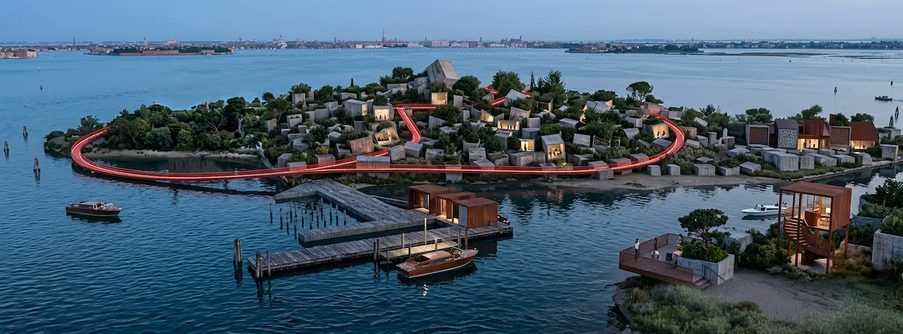
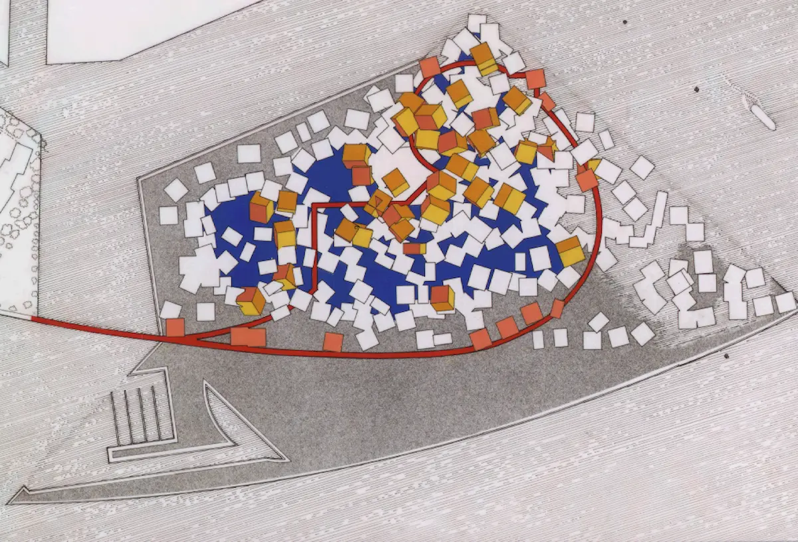
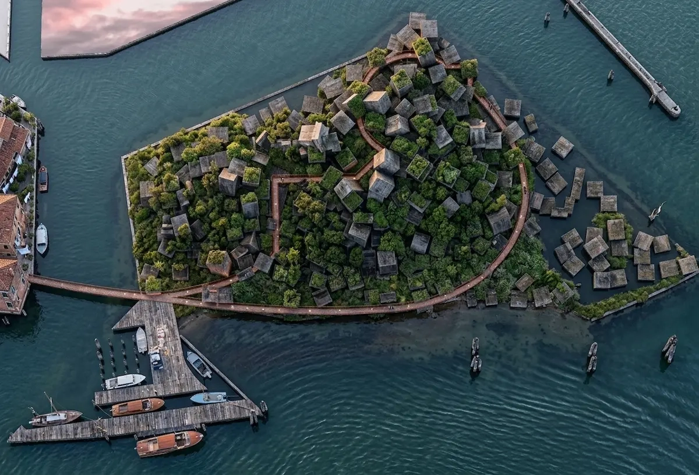
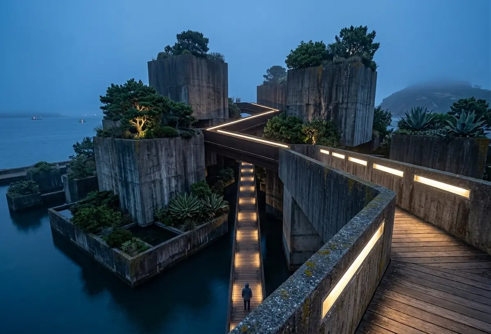
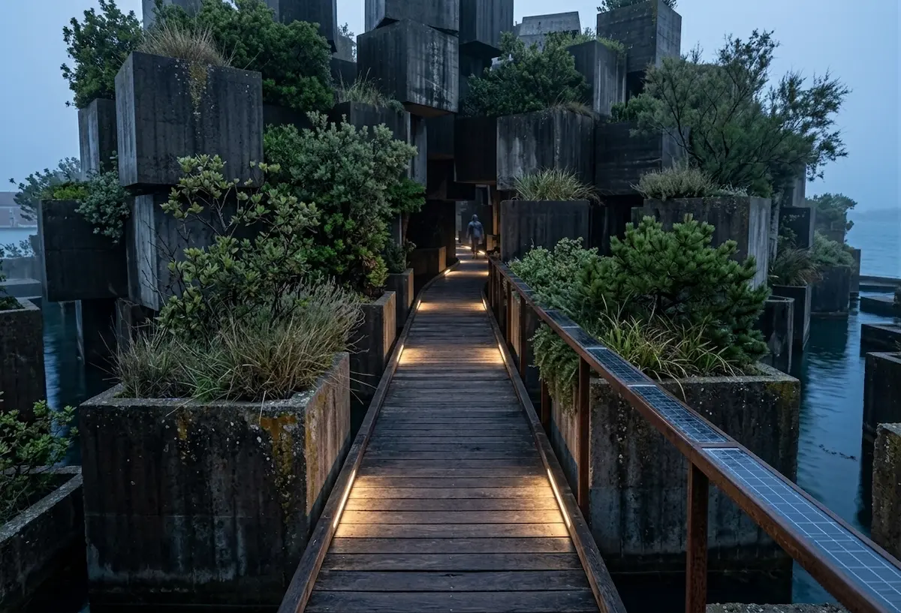
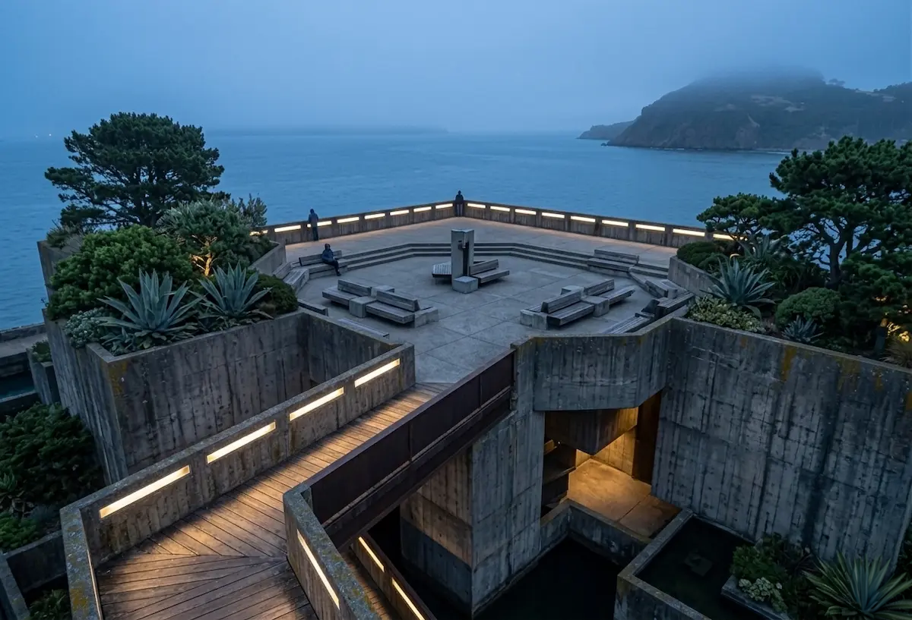

Immaginate un’architettura che non sfida la marea, ma la invita a partecipare. Il progetto si snoda nella laguna di Venezia come un mosaico tridimensionale di cubi in cemento armato a vista (beton brut), rilasciati con una casualità calcolata. Qui, la brutalità della materia incontra la fragilità dell'ecosistema: i volumi diventano giardini pensili, polmoni verdi sospesi sull'acqua che entra ed esce, scandendo il tempo della natura. Una passerella eterea in acciaio e legno taglia il complesso, ora svanendo tra i giganti di cemento, ora aprendosi su belvedere infiniti. Non è solo un parco tematico; è un organismo vivente dove l'uomo ritrova il suo posto tra artificio e barena.
Il cuore pulsante del progetto risiede nella sua grammatica dell'imprevedibile. La disposizione dei cubi non segue una griglia rigida, ma una casualità controllata che frammenta la visione d'insieme, impedendo all'occhio di percepire tutto e subito. Questa scelta progettuale genera una curiosità cinetica: ogni passo sulla passerella svela uno scorcio inedito, un giardino segreto incastonato nel cemento o una piazza sospesa sulla marea che prima era invisibile. L'ospite è spinto a esplorare non per raggiungere una meta, ma per il piacere della scoperta stessa. È un labirinto a cielo aperto dove il beton brut protegge la vegetazione e la passerella guida il cammino, ma è il vuoto tra i volumi – imprevedibile e mutevole con l'alzarsi dell'acqua – a dettare il ritmo di un'esperienza sensoriale sempre nuova. Qui, perdersi non è un errore, ma l'unico modo per vivere realmente l'isola.




